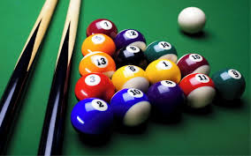

COLISOES
imagine partida de cinuca na qual a bola e atirada contra outras bolas, criando colisoes.
nessas colisoes podem ocorrer diversas sitacoes,como,por exemplo,uma bola para e outra segue em movimento,uma
bola segue atras da outra, uma bola segue adiante e outra volta.
vamos agora analisar as colisoes entre dois corpos,mas vamos agora dar maior atencao as colisoes que ocorrem numa unica direcao, ou
seja, unidirencionais.
